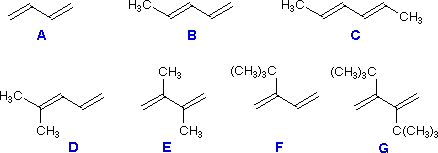

Examine the diene formulas A through G. Using 1,3-butadiene (A) as a reference, consider the relative reactivity of each in a Diels-Alder reaction with the dienophile maleic anhydride

1. Which dienes react more rapidly than A?
Enter the letters corresponding to your selections in the answer box. Do not enter superfluous characters, since they will be counted as incorrect answers.
2. Which dienes are less reactive than A?